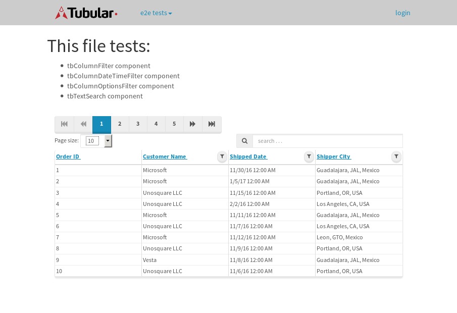

tbColumn.Grid Sorting - 33.921sTests: 5Skipped: 0Failures: 0 should sort data in ascending order then on descending order when sorting by Order Id column - 8.574sTests passed: 100.00%should order data in ascending order when click-sorting an unsorted text column - 5.165sTests passed: 100.00%should order data in descending order when click-sorting an ascending-sorted text column - 6.087sTests passed: 100.00%should order data in ascending order when click-sorting an unsorted date column - 6.395sTests passed: 100.00%should order data in descending order when click-sorting twice an unsorted date column - 7.699sTests passed: 100.00%
tbColumn.Grid Components - 4.321sTests: 3Skipped: 0Failures: 0 should print grid - 1.597s***Skipped***Tests passed: 0%should export grid - 1.389s***Skipped***Tests passed: 0%should show column selector - 1.335sTests passed: 100.00%
tbSingleForm.Form validations - 2.759sTests: 2Skipped: 0Failures: 0 should have an empty required field - 1.484sTests passed: 100.00%should not be able to click on save - 1.275sTests passed: 100.00%
Tubular Filters.tbColumnFilter - 113.015sTests: 12Skipped: 0Failures: 0 should cancel filtering when clicking outside filter-popover - 10.307sTests passed: 100.00%should disable Value text-input for "None" filter - 6.72sTests passed: 100.00%should disable apply button for "None" filter - 6.684sTests passed: 100.00%should decorate popover button when showing data is being filtered for its column - 12.171sTests passed: 100.00%should correctly filter data for the "Equals" filtering option - 8.804sTests passed: 100.00%should correctly filter data for the "Not Equals" filtering option - 11.056sTests passed: 100.00%should correctly filter data for the "Contains" filtering option - 9.056sTests passed: 100.00%should correctly filter data for the "Not Contains" filtering option - 9.084sTests passed: 100.00%should correctly filter data for the "Starts With" filtering option - 7.118sTests passed: 100.00%should correctly filter data for the "Not Starts With" filtering option - 6.916sTests passed: 100.00%should correctly filter data for the "Ends With" filtering option - 6.889sTests passed: 100.00%should correctly filter data for the "Not Ends With" filtering option - 6.959sTests passed: 100.00%
Tubular Filters.tbColumnDateTimeFilter - 141.761sTests: 12Skipped: 0Failures: 0 should cancel filtering when clicking outside filter-popover - 7.787sTests passed: 100.00%should disable Value text-input for "None" filter - 6.751sTests passed: 100.00%should disable apply button for "None" filter - 6.844sTests passed: 100.00%should clear filtering when clicking on Clean button - 18.74sTests passed: 100.00%should decorate popover button when showing data is being filtered for its column - 12.508sTests passed: 100.00%should correctly filter data for the "Equals" filtering option - 7.479sTests passed: 100.00%should correctly filter data for the "Not Equals" filtering option - 7.363sTests passed: 100.00%should correctly filter data for the "Between" filtering option - 13.223sTests passed: 100.00%should correctly filter data for the "Greater-or-equal" filtering option - 12.555sTests passed: 100.00%should corretlly filter data for the "Greater" filtering option - 12.461sTests passed: 100.00%should correctly filter data for the "Less-or-equal" filtering option - 12.453sTests passed: 100.00%should correctly filter data for the "Less" filtering option - 12.377sTests passed: 100.00%
Tubular Filters.tbColumnOptionsFilter - 84.589sTests: 3Skipped: 0Failures: 0 should cancel filtering when clicking outside filter-popover - 9.282sTests passed: 100.00%should decorate popover button when showing data is being filtered for its column - 11.969sTests passed: 100.00%should filter column-elements in accordance to the selected filter when selecting a single option - 51.553sTests passed: 100.00%
Tubular Filters.tbTextSearch - 50.496sTests: 5Skipped: 0Failures: 1 min-chars is not set - 0.903sTests passed: 100.00%should filter data in searchable-column customer name to matching inputted text, starting from 3 characters - 7.089sTests passed: 100.00%should filter data in searchable-column shipper city to matching inputted text, starting from 3 characters - 12.875sTests passed: 100.00%should show clear button when there is inputted text only - 7.011sTests passed: 100.00%should clear filtering when clicking clear button - 16.935sExpected 10 not to be 10.✗Tests passed: 0.00%
tbForm related components.tbCheckboxField - 7.25sTests: 2Skipped: 0Failures: 0 should save changes on "SAVE" - 3.252sTests passed: 100.00%should discard changes on "CANCEL" - 2.162sTests passed: 100.00%
tbForm related components.tbDropDownEditor - 13.611sTests: 5Skipped: 0Failures: 0 should set initial input value to the value of "value" attribute when defined - 2.615sTests passed: 100.00%should show the component name value in a label field when "showLabel" attribute is true - 1.747sTests passed: 100.00%should show a help field equal to this attribute, is present - 1.951sTests passed: 100.00%should submit modifications to item/server when clicking form "Save" - 3.503sTests passed: 100.00%should NOT submit modifications to item/server when clicking form "Cancel" - 3.004sTests passed: 100.00%
tbForm related components.tbTextArea - 17.913sTests: 7Skipped: 0Failures: 0 should set initial input value to the value of "value" attribute when defined - 1.885sTests passed: 100.00%should be invalidated when the number of chars is not in the range of "min" and "max" attributes - 2.406sTests passed: 100.00%should show the component name value in a label field when "showLabel" attribute is true - 2.162sTests passed: 100.00%should show a help field equal to this attribute, is present - 2.074sTests passed: 100.00%should require the field when the attribute "required" is true - 1.98sTests passed: 100.00%should submit modifications to item/server when clicking form "Save" - 3.876sTests passed: 100.00%should NOT submit modifications to item/server when clicking form "Cancel" - 2.586sTests passed: 100.00%
tbForm related components.tbDateEditor - 19.379sTests: 6Skipped: 0Failures: 4 should set initial date value to the value of "value" attribute when defined - 2.581sExpected false to be true.✗Tests passed: 0.00%should be invalidated when the date is not in the range of "min" and "max" attributes - 3.256sExpected false to be true.✗Expected 1 to be less than 1.✗Tests passed: 33.33%should show the component name value in a label field when "showLabel" attribute is true - 2.438sTests passed: 100.00%should show a help field equal to this attribute, is present - 2.713sTests passed: 100.00%should submit modifications to item/server when clicking form "Save" - 3.484sExpected false to be true.✗Tests passed: 0.00%should NOT submit modifications to item/server when clicking form "Cancel" - 3.34sExpected false to be true.✗Tests passed: 0.00%
tbForm related components.tbTypeaheadEditor - 20.639sTests: 7Skipped: 0Failures: 1 should show an options list when there is an API-info/component entered-data - 2.759sTests passed: 100.00%should select the option clicked - 2.515sTests passed: 100.00%should show a "delete" button when an option/match is selected, and delete the option if button is clicked - 2.478sFailed: each key must be a number of string; got boolean✗Tests passed: 50.00%should show a label value equal to the component name when "showLabel" attribue is true - 2.495sTests passed: 100.00%should require a value when "require" attribute is true - 2.651sTests passed: 100.00%should submit modifications to item/server when clicking form "Save" - 3.881sTests passed: 100.00%should NOT submit modifications to item/server when clicking form "Cancel" - 2.673sTests passed: 100.00%
tbForm related components.tbSimpleEditor - 24.758sTests: 9Skipped: 0Failures: 1 should set initial input value to the value of "value" attribute when defined - 1.915sTests passed: 100.00%should be invalidated when the number of chars is not in the range of "min" and "max" attributes - 3.424sTests passed: 100.00%should show the component name value in a label field when "showLabel" attribute is true - 1.887sTests passed: 100.00%should set input placeholder to the value of "placeholder" attribute - 3.327sTests passed: 100.00%should validate the control using the "regex" attribute, if present - 2.085sFailed: each key must be a number of string; got function✗Tests passed: 0.00%should show a help field equal to this attribute, is present - 1.932sTests passed: 100.00%should require the field when the attribute "required" is true - 2.558sTests passed: 100.00%should submit modifications to item/server when clicking form "Save" - 3.827sTests passed: 100.00%should NOT submit modifications to item/server when clicking form "Cancel" - 2.817sTests passed: 100.00%
tbForm related components.tbNumericEditor - 20.986sTests: 7Skipped: 0Failures: 0 should set initial component value to the value of "value" attribute when defined - 2.478sTests passed: 100.00%should be invalidated when the entered number is not in the range of "min" and "max" attributes - 2.946sTests passed: 100.00%should show the component name value in a label field when "showLabel" attribute is true - 1.949sTests passed: 100.00%should show a help field equal to this attribute, is present - 2.49sTests passed: 100.00%should require the field when the attribute "required" is true - 2.857sTests passed: 100.00%should submit modifications to item/server when clicking form "Save" - 3.877sTests passed: 100.00%should NOT submit modifications to item/server when clicking form "Cancel" - 3.356sTests passed: 100.00%
tbForm Connection Error - 2.512sTests: 1Skipped: 0Failures: 0 tbForm connection error functionality - 0.474sTests passed: 100.00%
tbForm Connection Error - 3.116sTests: 1Skipped: 0Failures: 0 tbForm connection error functionality - 0.636sTests passed: 100.00%
tbForm Connection Error - 2.299sTests: 1Skipped: 0Failures: 1 tbForm connection error functionality - 0.374sExpected '' to equal 'No data found'.✗Tests passed: 0.00%
tb Form Date Editor.tbDateEditor - 20.069sTests: 6Skipped: 0Failures: 0 should set initial date value to the value of "value" attribute when defined - 2.414sTests passed: 100.00%should be invalidated when the date is not in the range of "min" and "max" attributes - 3.536sTests passed: 100.00%should show the component name value in a label field when "showLabel" attribute is true - 2.099sTests passed: 100.00%should show a help field equal to this attribute, is present - 1.957sTests passed: 100.00%should submit modifications to item/server when clicking form "Save" - 4.553sTests passed: 100.00%should NOT submit modifications to item/server when clicking form "Cancel" - 3.337sTests passed: 100.00%
tbGridComponents - 9.444sTests: 6Skipped: 0Failures: 0 should add item with newRow method - 2.539sTests passed: 100.00%should add item with newRow method and cancel action - 0.729sTests passed: 100.00%should update item with tbSaveButton - 1.466sTests passed: 100.00%should update item with tbSaveButton and cancel action - 0.98sTests passed: 100.00%should remove item with tbRemoveButton - 1.295sTests passed: 100.00%should remove item with tbRemoveButton and cancel action - 0.853sTests passed: 100.00%
tbGridPager.navigation buttons - 9.114sTests: 1Skipped: 0Failures: 0 should perform no action when clicking on the numbered navigation button corresponding to the current-showing results page - 1.564sTests passed: 100.00%
tbGridPager.navigation buttons.first/non-last results page related functionallity - 3.629sTests: 2Skipped: 0Failures: 0 should disable "first" and "previous" navigation buttons when in first results page - 1.799sTests passed: 100.00%should enable "last" and "next" navigation buttons when in a results page other than last - 1.83sTests passed: 100.00%
tbGridPager.navigation buttons.last/non-first results page related functionallity - 3.92sTests: 2Skipped: 0Failures: 0 should disable "last" and "next" navigation buttons when in last results page - 1.751sTests passed: 100.00%should enable "first" and "previous" navigation buttons when in a results page other than first - 2.169sTests passed: 100.00%
tbGridPager.page navigation - 7.823sTests: 5Skipped: 0Failures: 0 should go to next results page when clicking on next navigation button - 1.965sTests passed: 100.00%should go to previous results page when clicking on previous navigation button - 1.423sTests passed: 100.00%should go to last results page when clicking on last navigation button - 1.337sTests passed: 100.00%should go to first results page when clicking on first navigation button - 1.641sTests passed: 100.00%should go to corresponding results page when clicking on a numbered navigation button - 1.457sTests passed: 100.00%
tbGridPagerInfo - 5.337sTests: 2Skipped: 0Failures: 0 should show text in accordance to numbered of filter rows and current results-page - 1.776sTests passed: 100.00%should show count in footer - 0.651sTests passed: 100.00%
tbHttp - 24.927sTests: 8Skipped: 0Failures: 0 should be authenticated - 4.164sTests passed: 100.00%retrieve data - 2.588sTests passed: 100.00%should not login bad credentials - 2.718sTests passed: 100.00%should have a refresh token - 4.144sTests passed: 100.00%should remove authentication - 2.793sTests passed: 100.00%get method-Is not authenticated - 3.066sTests passed: 100.00%post method-Is not authenticated - 2.755sTests passed: 100.00%should regenerate access token on post - 2.699sTests passed: 100.00%
LocalData.Grid Local Data Sorting - 8.769sTests: 4Skipped: 0Failures: 1 should order data in ascending order when click-sorting an unsorted text column - 2.074sTests passed: 100.00%should order data in descending order when click-sorting an ascending-sorted text column - 2.088sTests passed: 100.00%should correctly filter data for the "Contains" filtering option - 2.209sFailed: Element is not enabled✗Tests passed: 0.00%should correctly filter data for the "Contains" with ENTER key - 2.395sTests passed: 100.00%
OData.Grid OData Sorting - 45.856sTests: 7Skipped: 0Failures: 1 should order data in ascending order when click-sorting an unsorted numeric column - 7.701sTests passed: 100.00%should order data in descending order when click-sorting an ascending-sorted numeric column - 5.993sTests passed: 100.00%should order data in ascending order when click-sorting an unsorted text column - 4.645sTests passed: 100.00%should order data in descending order when click-sorting an ascending-sorted text column - 8.135sTests passed: 100.00%should order data in ascending order when click-sorting an unsorted date column - 6.144sTests passed: 100.00%should order data in descending order when click-sorting an ascending-sorted date column - 9.208sTests passed: 100.00%should correctly filter data for the "Contains" filtering option - 4.028sFailed: Element is not enabled✗Tests passed: 0.00%
tbPageSizeSelctor - 22.445sTests: 4Skipped: 0Failures: 0 should filter up to 10 data rows per page when selecting a page size of "10" - 3.274sTests passed: 100.00%should filter up to 20 data rows per page when selecting a page size of "20" - 2.569sTests passed: 100.00%should filter up to 50 data rows per page when selecting a page size of "50" - 6.9sTests passed: 100.00%should filter up to 100 data rows per page when selecting a page size of "100" - 6.772sTests passed: 100.00%
tbRowSelectable - 18.174sTests: 2Skipped: 0Failures: 0 selected rows - 8.408sTests passed: 100.00%unselected rows - 6.504sTests passed: 100.00%
tbSingleForm.Form fields - 17.658sTests: 7Skipped: 0Failures: 1 should load correct info - 1.199sTests passed: 100.00%should change customer name - 1.188sTests passed: 100.00%should save it - 4.936sFailed: Element is not enabled✗Tests passed: 0.00%should clear the inputs - 1.172sTests passed: 100.00%should update - 1.564sTests passed: 100.00%should reset editor - 4.656sTests passed: 100.00%should not save if not Changes - 2.941sTests passed: 100.00%
tbSingleForm.Form validations - 2.599sTests: 2Skipped: 0Failures: 0 should load correct info - 1.243sTests passed: 100.00%should not be able to click on save - 1.355sTests passed: 100.00%
tubularTemplateServiceModule.#createColumns() - 2.169sTests: 2Skipped: 0Failures: 0 should return an array with 7 elements - 1.074sTests passed: 100.00%first element should match - 1.095sTests passed: 100.00%
tubularTemplateServiceModule.#generateFieldsArray() - 1.704sTests: 2Skipped: 0Failures: 0 should return an array with 7 elements - 0.879sTests passed: 100.00%first element should match - 0.825sTests passed: 100.00%
tubularTemplateServiceModule.#generatePopup() - 1.061sTests: 1Skipped: 0Failures: 0 should html match - 1.061sTests passed: 100.00%
tubularTemplateServiceModule.#getEditorTypeByDateType() - 3.563sTests: 4Skipped: 0Failures: 0 should be tbDateTimeEditor - 0.793sTests passed: 100.00%should be tbNumericEditor - 0.866sTests passed: 100.00%should be tbCheckboxField - 1.047sTests passed: 100.00%should be tbSimpleEditor - 0.857sTests passed: 100.00%
tubularTemplateServiceModule.#generateForm() - 3.019sTests: 3Skipped: 0Failures: 0 should single layout html match - 1.295sTests passed: 100.00%should two columns layout html match - 0.879sTests passed: 100.00%should three columns layout html match - 0.842sTests passed: 100.00%
tubularTemplateServiceModule.#generateCells() - 0.779sTests: 1Skipped: 0Failures: 0 should html match - 0.779sTests passed: 100.00%
tubularTemplateServiceModule.#generateGrid() - 0.881sTests: 1Skipped: 0Failures: 0 should html match - 0.881sTests passed: 100.00%


{kind=link}